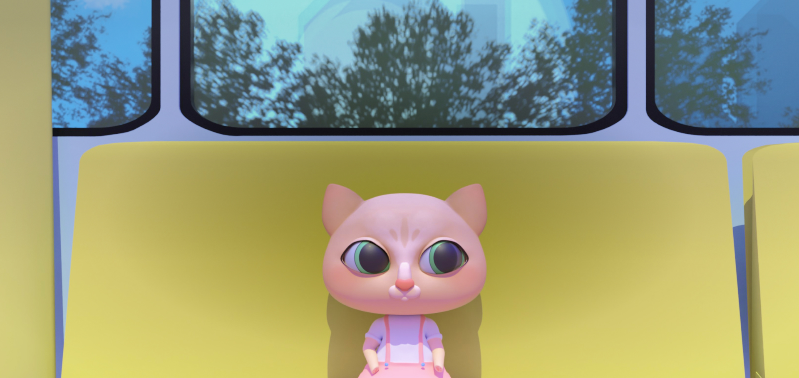

Animation 3D
Mia dans l’autobus

Description
Mia dans l’autobus est mon projet final du cours d’animation 3D. Je devais créer une courte animation 3D scénarisée. J’ai dessiné, modélisé et animé le personnage principal de cette vidéo, ainsi que tout le décor l’entourant.